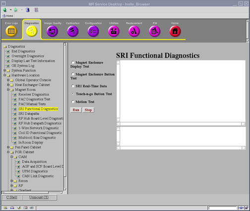
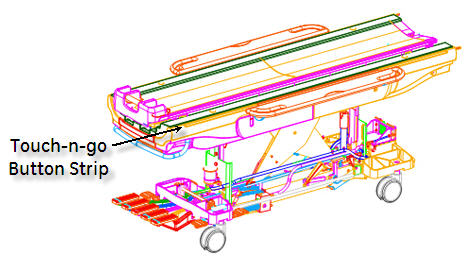

Proprietary to General Electric
Direction 5500113, Rev# 3
Discovery MR750 3.0T Service Methods
Module Version 2.0, Version Date 6/27/08
Proprietary to General Electric |
Diagnostics >> System Function >> Patient Handling >> SRI Functional Tests
Diagnostics >> Hardware Location >> Magnet Room >> SRI Functional Tests
Illustration 1: SRI Function Tests Screen

The diagnostic displays the ADC value of the left and right touch and go strips. As the ADC values change by pressing the touch and go buttons on the table, the values will be displayed on the diagnostic screen.
SRI
Dock
Table (touch and go strip)
32 channel table (table with the touch and go strip)
Electrical dock is engaged
None
Click [Run] to initiate test.
Press the touch and go strip buttons.
If some of the buttons work but not all, start pressing buttons toward the magnet end of the table when the buttons stop changing the ADC values, that is the location of the problem (see Illustration 2).
Illustration 2: Touch-n-go Button Strip

Displays the current ADC value for the left and right touch and go button input.